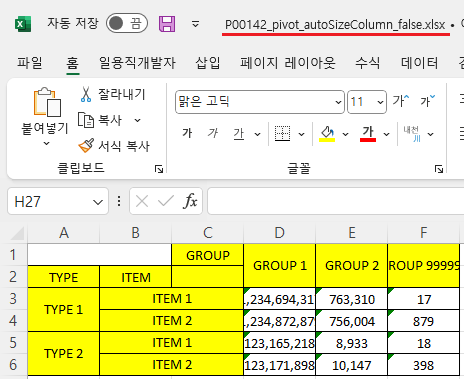
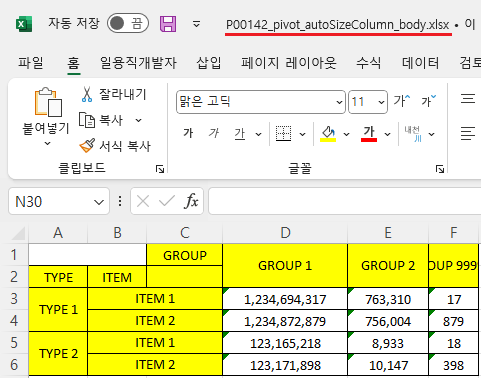
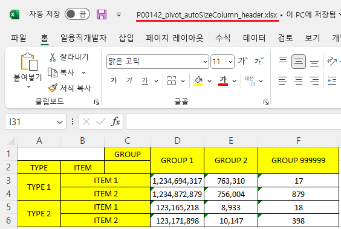

Pivot의 'pivotExcelDownload' 메소드의 첫 번째 인자인 JSON 객체의 'autoSizeColumn'을 사용하여, 엑셀 다운로드 시 컬럼 너비의 자동 조절 기능을 비교한 예제입니다. 'autoSizeColumn'의 설정에 따른 동작은 아래와 같습니다.
false: (기본 설정) 너비 자동 맞춤을 수행하지 않음.
body: 피벗의 Body를 기준으로 너비를 조정.
header: 피벗의 Header를 기준으로 너비를 조정.
엑셀 다운로드 - 옵션 미적용
엑셀 다운로드 - Body 데이터의 길이를 기준으로 컬럼 너비 지정
엑셀 다운로드 - Header 헤더의 길이를 기준으로 컬럼 너비 지정
1
STEP 1: '엑셀 다운로드 - 옵션 미적용' 버튼을 클릭합니다.
2
STEP 2: 실행 결과를 확인합니다.
다운로드된 "P00142_pivot_autoSizeColumn_false.xlsx" 엑셀 파일을 실행합니다.
엑셀의 컬럼 너비를 확인합니다.
Image 1.다운로드된 엑셀(2021) 파일 예시

1
STEP 1: '엑셀 다운로드 - Body 데이터의 길이를 기준으로 컬럼 너비 지정' 버튼을 클릭합니다.
2
STEP 2: 실행 결과를 확인합니다.
다운로드된 "P00142_pivot_autoSizeColumn_body.xlsx" 엑셀 파일을 실행합니다.
엑셀의 컬럼 너비를 확인합니다. 컬럼의 너비가 Body의 데이터 길이를 기준으로 자동 조절되었습니다.
Image 2.다운로드된 엑셀(2021) 파일 예시

1
STEP 1: '엑셀 다운로드 - Header 헤더의 길이를 기준으로 컬럼 너비 지정' 버튼을 클릭합니다.
2
STEP 2: 실행 결과를 확인합니다.
다운로드된 "P00142_pivot_autoSizeColumn_header.xlsx" 엑셀 파일을 실행합니다.
엑셀의 컬럼 너비를 확인합니다. 컬럼의 너비가 Header의 데이터 길이를 기준으로 자동 조절되었습니다.
Image 3.다운로드된 엑셀(2021) 파일 예시

1
'pivotExcelDownload' 메소드를 사용하여 스크립트를 작성합니다.
Example 1.Script
//엑셀 다운로드 옵션 var jsnOptions = { "fileName" : "P00142_pivot_autoSizeColumn.xlsx", "autoSizeColumn" : "body" //false, body, header }; //"autoSizeColumn" : "body" – 피벗의 Body를 기준으로 너비를 조정. //"autoSizeColumn" : "header" – 피벗의 Header를 기준으로 너비를 조정. //"autoSizeColumn" : "false" - (기본 값) 너비 자동 맞춤을 수행하지 않음. //Pivot [piv_ex01]를 엑셀로 다운로드 합니다. piv_ex01.pivotExcelDownload(jsnOptions);
pivotExcelDownload( options , infoArr )